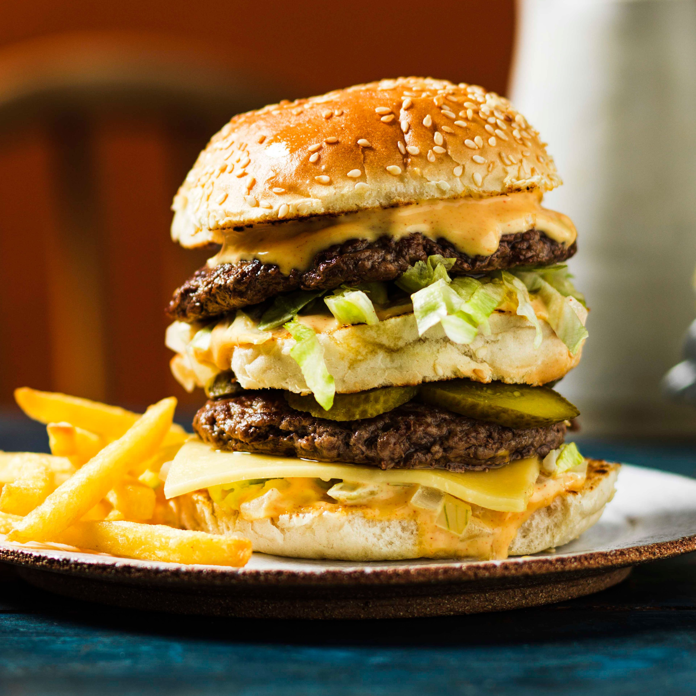

CheeseBurger
Home

Description
Cheese Burger is the best go to recipe for people who enjoy trying to
put on weight as it is full of proteins, vitamins and other much needed contents.
The price is also quite affordable and you can have it without spending
alot. It comes with complements such as chips which you would really like it
Ingredients
- 500g (80% lean, 20% fat) for juicy patties
- 4 slices of American, cheddar, or your favorite melting cheese
- 1 teaspoon salt and 1/2 teaspoon black pepper
- Lettuce, tomato slices, pickles, onions, ketchup, mayonnaise
Steps
- Divide the beef into 4 equal portions.
- Heat a skillet or pan over medium-high hea
- Heat your skillet (cast iron works best) over high heat until
very hot and slightly smoking. Add oil
- lace the patties in the hot pan
- Flip the patties over.
- Remove the patties from the pan and let them rest for 3 minutes.